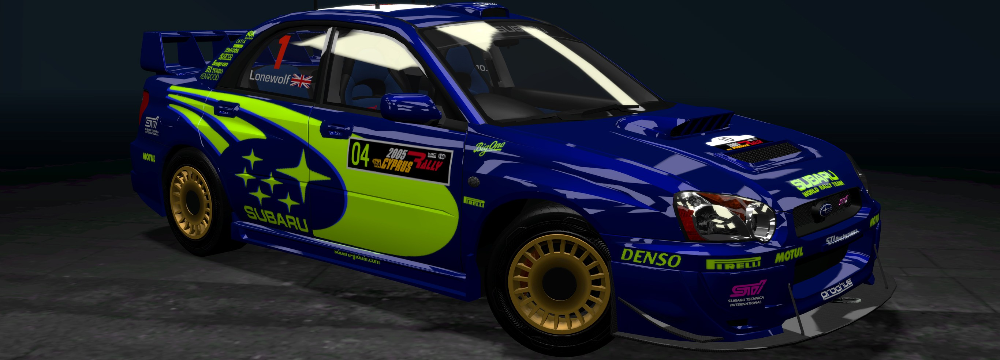

Subaru Impreza WRX STI

- Production
- The Subaru Impreza WRX STI had a 20 year run, starting in 1994 and ending its run in 2014
- Engine
- The Impreza WRX STI uses a Subaru 4 cylinder EJ series boxer engine, displacing 2.0 litres and outputing a stock 276 horsepower